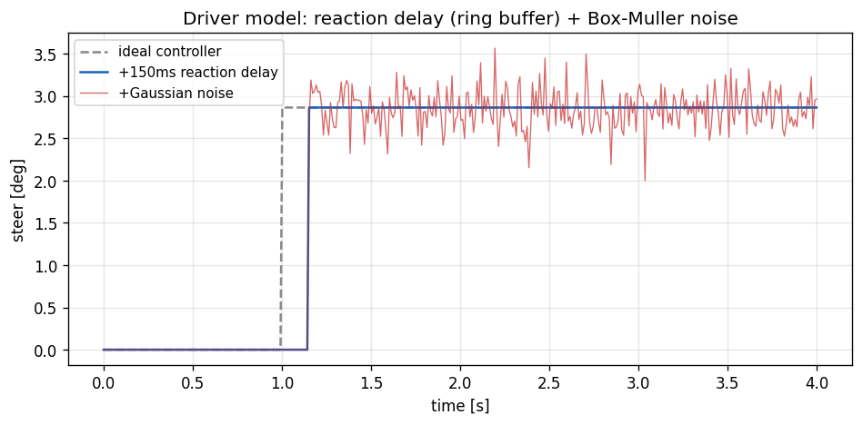

10. Driver Model (Latency + Gaussian Noise)¶
Learning objectives¶
이 chapter 를 마치면 다음을 할 수 있다.
- human reaction time 을 ring-buffer 로 discrete delay 표현하는 방법과 그 한계 (dt 정수배) 를 설명한다.
- Box-Muller 변환으로 두 uniform 에서 Gaussian 을 생성하는 원리를 유도한다.
- Pure Pursuit + Lc6 + Lc5 cascade 외측에 인간 imperfection 을 wrapping 하는 minimal driver model 의 의의 (autonomous baseline) 를 설명한다.
- 외부 uniform 입력으로 reproducibility 를 보장하는 설계를 설명한다.
Prerequisites¶
- Chapter 08-09 — Lc5/Lc6 cascade, Pure Pursuit.
- 외부 — 정규분포 / random number 기초.
10.1 동기 — 인간 driver baseline¶
controller 측은 두 영역으로 나뉜다.
- Autonomous controller (Pure Pursuit / Stanley / MPC) — perfect, instant.
- Human driver — imperfect (reaction delay, jitter), bounded.
ADAS/autonomous 성능 평가에는 인간 driver baseline 또는 driver-in-the-loop surrogate 가 필요하다. DriverModel 은 ideal cascade (PP + Lc6 + Lc5) 위에 reaction delay (ring buffer) 와 Gaussian noise 를 더한 minimal driver 다.

10.2 가정¶
| 가정 | 의미 | 깨지는 case |
|---|---|---|
| Fixed reaction time | latency 일정 | fatigue / 인지부하 |
| dt 정수배 delay | ring buffer 가 정확 N step | 비정수 latency |
| Gaussian noise | jitter 가 정규분포 | fat-tail 실측 |
| Correlated thr/brake | 같은 noise z 공유 | independent |
| No anticipation | lookahead 만 미래 정보 | preview control |
10.3 Reaction delay — ring buffer¶
인간 visual-to-motor latency ≈ 150-300 ms (도시 driving). ring buffer 로 discrete delay:
매 step 현재 PP 출력을 buffer 에 쓰고, index 를 순환시켜 \(N_{\text{buf}}\) step 전 값을 읽는다 → 정확히 \(N_{\text{buf}}\) step delay.
한계: latency 가 dt 정수배만 표현 가능 (150 ms / 5 ms = 30 OK, 150.5 ms 는 round). time-varying reaction (fatigue) 미반영.
10.4 Gaussian noise — Box-Muller¶
두 uniform \(u_1, u_2 \in (0,1)\) 로 표준정규 \(z\sim N(0,1)\):
유도: 2D Gaussian 의 polar form 에서 \(r^2 = -2\ln u_1\), \(\theta = 2\pi u_2\) → \((r\cos\theta, r\sin\theta)\) 가 독립 Gaussian 쌍. 첫 성분만 사용.
noise level (default): steer σ=0.005 rad (3σ≈0.9°, 실인간 jitter order), throttle σ=0.02 (±6 %). calibration starting point — 특정 driver 측정으로 fit 가능.
10.5 Cascade 통합 + reproducibility¶
PurePursuit → raw_steer
→ reaction delay (ring buffer) → delayed_steer
→ + Gaussian noise → noisy_steer (clamp max_steer)
v_target → Lc6 PI → ax_target → Lc5 PI+FF → throttle/brake
→ + Gaussian noise → noisy_throttle/brake
→ CmdL4
uniform \(u_1, u_2\) 를 외부에서 주입 (controller 가 내부 RNG 를 갖지 않음) → 같은 seed 면 결과 bit-equal. 이는 회귀 test 와 시나리오 재현에 필수다.
10.6 검증 전략¶
| 검증 | 케이스 |
|---|---|
| Reaction delay | 100 ms 동안 buffer 가 0 출력 후 release |
| Noise bound | 200 ticks σ=0.005 에서 max steer ≤ 0.04 (8σ) |
| End-to-end | figure-8 에서 PP-perfect 대비 jittery+delayed steer, 추종 유지 |
10.7 Pure Pursuit perfect vs DriverModel¶
| Metric | Pure Pursuit | DriverModel |
|---|---|---|
| Steer | smooth | jittery + 150 ms delay |
| vx tracking | tight | slight over/undershoot |
| Trajectory | path 근접 | 약간 vibration |
두 binary 의 비교가 "autonomous 가 인간 대비 얼마나 깨끗한 driving 이 가능한가" 의 quantification 이다.
10.8 한계¶
| 항목 | 한계 |
|---|---|
| Reaction time | fixed (fatigue/distraction 미반영) |
| Noise 분포 | Gaussian (실제 fat tail) |
| thr/brake | correlated (independent 가 정확) |
| Anticipation | lookahead 만, preview 없음 |
| Driver intent/mood | 미반영 |
| Force feedback | rack torque 입력만, 반응 없음 |
본격 driver model (Werling OpenDriver, IPGDriver) 은 30+ parameter. 본 모델은 minimal 5 parameter.
10.9 다음 chapter 와의 연결¶
chapter 04-10 이 plant(Ld) + control(Lc) 사다리를 완성했다. chapter 11 은 이 모든 EoM 을 적분하는 수치 기법 (RK4, substepping, 1-step lag), chapter 12 는 전체 software architecture 를 다룬다.
10.10 참고문헌¶
- Hess, R.A. & Modjtahedzadeh, A., A control theoretic model of driver steering behavior, IEEE CSM, 1990.
- MacAdam, C.C., Application of an optimal preview control ..., IEEE Trans. SMC, 1981.
- IPGDriver Reference Manual, IPG Automotive (commercial driver model).
10.11 Self-check¶
1. ring buffer 크기가 reaction_time/dt 인 이유?
매 step 쓰고 한 칸씩 순환하므로, $N$ 칸 buffer 는 정확히 $N$ step 전 값을 반환한다. $N = t_{\text{react}}/dt$ 면 $t_{\text{react}}$ 지연이 된다.2. Box-Muller 에서 u1 을 1e-6 으로 clamp 하는 이유?
$u_1=0$ 이면 $\ln u_1 = -\infty$ → $z$ 발산. 하한 clamp 로 수치 안정성 확보.3. 외부에서 uniform 을 주입하는 설계의 이점?
controller 가 내부 RNG state 를 갖지 않아 같은 seed → bit-equal 재현. 회귀 test 와 시나리오 reproducibility 에 필수.4. throttle/brake 에 같은 noise z 를 쓰는 단순화의 부작용?
둘이 correlation 1.0 → 동시에 같은 방향으로 흔들린다. 실제는 독립적이라 pedal 전환 구간의 noise 통계가 부정확해진다.5. discrete delay 가 비정수 latency 를 표현 못 하는 이유와 완화책?
ring buffer 가 step 단위라 dt 정수배만 가능. 작은 dt 를 쓰거나, fractional delay 를 위해 두 칸을 선형 보간하면 완화된다.10.12 VDSim 구현 노트¶
[VDSim impl] § 10.3 — Ring buffer 코드
dt=5 ms, reaction=150 ms → buffer size 30 (trivial memory).struct DriverModel { std::vector<double> steer_buffer_; int steer_idx_ {0}; double reaction_time_s {0.150}; }; // 매 step: buf_size = round(reaction_time / dt); steer_buffer_[steer_idx_] = pp_steer_now; steer_idx_ = (steer_idx_ + 1) % buf_size; delayed_steer = steer_buffer_[steer_idx_];[VDSim impl] § 10.4 — Box-Muller 코드
defaultconst double u1 = clamp(rand_a, 1e-6, 1 - 1e-6); const double u2 = rand_b; const double z = sqrt(-2 * log(u1)) * cos(2 * M_PI * u2); delayed_steer += g_.steer_noise_rms * z;steer_noise_rms=0.005,thr_noise_rms=0.02. throttle/brake 는 같은 z (correlation 1.0) — minimal 단순화.[VDSim impl] § 10.5 — DriverModel::update + cascade
core/src/control_converter.cpp의DriverModel::update. 내부 cascade gain: vx PID \(K_p=0.6, K_i=0.15\) (auto cascade 보다 느림 — 인간 reaction 모사), ax PID 는 Lc5 default.[VDSim impl] § 10.5 — Reproducibility 예제
seed 42 → bit-equal (std::mt19937_64 rng(42); std::uniform_real_distribution<double> uni(0, 1); const double a = uni(rng), b = uni(rng); auto out = drv.update(x, y, yaw, vx, v_target, path_x, path_y, n, dt, a, b);examples/driver_demo.cpp).[VDSim impl] § 10.6 — 검증 test + end-to-end
DriverModel.*2 tests:ReactionTimeDelaysSteer,NoiseIsBoundedByRMS.vdsim_driver_demo(sedan, figure-8, v_target=10, latency 150 ms, σ_steer 0.005, σ_thr 0.02): PP-perfect 대비 거친 steer, trajectory 추종 유지 (sedan saturation 한계 내).[VDSim impl] § 10.x — 사용 예제
vdsim::DriverModel drv; drv.initialize({.wheelbase=vp.wheelbase, .max_steer=vp.max_steer_angle_wheel, .lookahead_min=2.0, .lookahead_k=0.45, .reaction_time_s=0.150, .steer_noise_rms=0.005, .thr_noise_rms=0.02, .vx_kp=0.6, .vx_ki=0.15}); while (...) { const double a = uni(rng), b = uni(rng); auto out = drv.update(x,y,yaw,vx,v_target, path_x,path_y,n, dt, a,b); vdsim::CmdL4 cmd{.throttle=out.throttle, .brake=out.brake, .steer_angle_wheel=out.steer}; dyn->step(cmd, contacts, dt); }